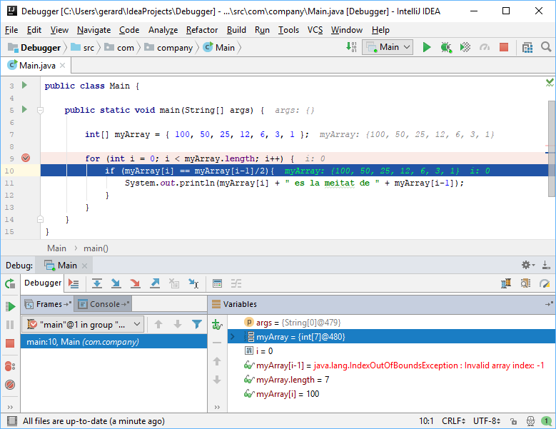

L'objectiu d'aquest CodeLab és la iniciació a l'ús de depurador (debugger).
La depuració de programes és el procés d'identificar i corregir errors de programació (bugs).
IntelliJ proporciona una ampli ventall d'eines per a la depuració del codi. Es pot trobar una guia exhaustiva al següent enllaç: https://www.jetbrains.com/help/idea/debugging-code.html
En aquest codelab ens iniciarem en l'ús de:
- Breakpoints
- Watches
Inicia IntelliJ i crea un nou projecte anomenat "Debugger".


El següent codi tracta de comprovar si cada element d'un array és la meitat de l'anterior:
public class Main {
public static void main(String[] args) {
int[] myArray = { 100, 50, 25, 12, 6, 3, 1 };
for (int i = 0; i < myArray.length; i++) {
if (myArray[i] == myArray[i-1]/2){
System.out.println(myArray[i] + " es la meitat de " + myArray[i-1]);
}
}
}
}Aquest codi conté alguns errors (bugs) que tractarem de corregir.
Si l'executem tal i com està ens sortirà el seguent runtime-error:
Exception in thread "main" java.lang.ArrayIndexOutOfBoundsException: -1
at com.company.Main.main(Main.java:10)
Els breakpoints són punts en els que podem aturar l'execució d'un programa, i observar pas a pas el seu comportament.
Per a afegir un breakpoint, només cal posar el cursor sobre la línia on el volem posar i prèmer Ctrl+F8.
També ho podem fer amb el ratolí, fent click sobre el panell gris que hi ha just al costat del codi:

Quan afegim un breakpoint, s'indica amb un cercle vermell.
Una cop afegit els breakpoints desitjats, es pot iniciar la depuració de l'aplicació.
Per a iniciar-la fem click a l'icona Debug ( ) o premem
) o premem Ctrl+F9.
IntelliJ llançará la sessión de depuració. Compilarà i executarà l'aplicació, suspenent-la al primer breakpoint. Podem veure dues coses que han canviat:
- La primera cosa que ha canviat és el color de la primera línea amb un breakpoint. Ara es veurà de color blau:

Això significa que l'execució ha arribat al breakpoint i s'ha parat abans d'executar la sentència.
- A la part inferior de la finestra, ha sorgit el
Debug Tool Window, amb molta informació sobre l'execució del programa.

Anem a fer un pas en l'execució del programa. Fes click sobre la icona  , o simplement prem
, o simplement prem F8.
La següent instrucció es posa en blau:

Al panell Variables, podem veure ja on és l'error del nostre programa: la variable i té el valor 0, així que quan tractem d'accedir a la posició i-1 de myArray, l'índex està fora dels límits (IndexOutOfBoundsException).
Així doncs, deduïm que l'error del nostra programa es dona quan la variable i té el valor 0, i el podem corregir per a que comenci pel valor 1:
public class Main {
public static void main(String[] args) {
int[] myArray = { 100, 50, 25, 12, 6, 3, 1 };
for (int i = 1; i < myArray.length; i++) {
if (myArray[i] == myArray[i-1]/2){
System.out.println(myArray[i] + " es la meitat de " + myArray[i-1]);
}
}
}
}Breakpoints condicionals
Ja hem corregit l'error d'execució (runtime-error) del programa. Però ara tenim un error molt més subtil que és més dificil de trobar.
Si executem el programa, ens dona el següent resultat:
50 es la meitat de 100
25 es la meitat de 50
12 es la meitat de 25
6 es la meitat de 12
3 es la meitat de 6
1 es la meitat de 3
Tenim un error extrany quan diu "12 es la meitat de 25", perquè ens diu això? Sabem que la meitat de 25 és 12.5 i no 12. ¿Què està passant?
Podem tornar a depurar el programa i anar pas a pas fins que s'arribi al número 12, què és el que ens està donant el bug.
Una altra opció, es afegir un breakpoint condicional, de forma que l'execució s'aturi justament quan s'arribi al número 12.
Per a fegir un breakpoint condicional, fem click-dreta sobre el breakpoint i afegim la condició desitjada. En el nostre cas, ens interessa que es pari quan el valor de myArray[i] sigui 12:

Si iniciem la depuració, l'execució del programa s'aturarà en el breakpoint, solament quan es compleixi la condició myArray[i] = 12.
A la finestra Variables, podem veure el valor actual de totes les variables i afegir les expressions que desitjem.
Podem veure que:
myArray[i] = 12
myArray[i-1] = 25
Afegirem l'expressió myArray[i-1]/2 per veure quin és el resultat d'aquesta divisió. Fem click al botó :

Ja podem veure l'error! L'expressió myArray[i-1]/2 dona com a resultat 12. Ara ens podem adonar de que hauriem d'haver realitzat una conversió a float, ja que el tipus int no té xifres decimals...
public class Main {
public static void main(String[] args) {
int[] myArray = { 100, 50, 25, 12, 6, 3, 1 };
for (int i = 1; i < myArray.length; i++) {
if (myArray[i] == (float) myArray[i-1]/2){
System.out.println(myArray[i] + " es la meitat de " + myArray[i-1]);
}
}
}
}